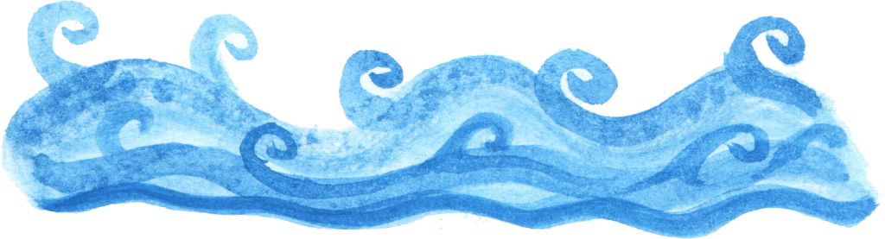

A Word of Warning for Those who Doubt the Importance of Oral Hygiene at Sea
Once upon a time there was a bad old pirate named Pirate Davey.
Pirate Davey's ship was called the Soiled Nappy, on account of what men did when they saw its sails heading in their direction, for Davey would cut your head off as soon as look at you for a few pieces of gold and a bottle of rum.
As well as being the meanest pirate on the water, it was said that one whiff of Davey's stinky breath, which smelled like a mixture of rotten fish-guts and last night's liquor, could make a man lose his wits and jump overboard.
It was also said that the fishes in the ocean could smell Old Davey's breath and it made them so depressed they didn't feel like mating, and as a result the fish population was dwindling.
One morning as Pirate Davey was out strolling on the deck of the Soiled Nappy, pirating and being a bastard, he met a whale called Old Man Bob.
Old Man Bob was the wisest and oldest whale in those parts and some of the other sea creatures had asked him to have a word to Pirate Davey, as they were very hungry.
"Ahoy Pirate Davey", said Old Man Bob, "Brush your teeth, you old bastard. All the fishes are dying on account of your putrid facehole."
"Shove a fish up your barnacle-covered arse, Old Man Bob", replied Pirate Davey, "Teethbrushing is for worm suckin' butt scratchin' landlubbers"
"Pirate Davey," replied Old Man Bob, "If you don't attend to your rancid maw I will remove it for you."
But Pirate Davey only replied, "Blow it out yer bilge! ye spud faced penny lickin' jack shat!""
Without hesitation Old Man Bob rose up out of the water and bit Davey's head right off his shoulders.
Bad pirates are hard to kill, so Old Davey didn't just fall down and die. He kept walking around the deck, spewing blood out his neck-hole.
Pirate Davey's hands gestured wildly, as if there were many vile curses he'd like to sling at Old Man Bob, but alas he no longer had a head or mouth with which to do so.
Old Man Bob laughed and laughed.
To this day, Pirate Davey walks around the deck of the Soiled Nappy angrily looking for Old Man Bob so he can have his revenge.
Brave sailors continue to soil their nappies at the sight of the Soiled Nappy's sails in the distance, perhaps even more than they did before, as a headless pirate is a fearsome thing to behold, especially one as angry as Pirate Davey.
Meanwhile even the hardendest of Pirate bastards turn pale at the mention of Old Man Bob, and make sure they always brush their teeth twice a day. It is rumoured Old Man Bob lurks the depths even today, chuckling to himself at the memory of Pirate Davey's bloody neckhole and furious gesticulations.
The Peril of Choosing a Bride Already Enchanted by the Sea
Long, long ago, there was a beautiful girl named Miranda. She liked picking flowers and riding her horse and doing normal girl stuff but there was something not right about her.
During the night, she would dream of a very cold dark place, deep deep down in the sea. Sometimes she would awake to see a skull face with tentacles all around it, and somehow she knew it was a magical creature named the Skull Kraken.
The Skull Kraken had seen Miranda with his psychic powers and wanted her to be his bride. He was enticing her with dreams of the deep ocean, not to mentions his awesome skull and tentacles, so she would want to come and live with him.
Miranda's parents knew she was pretty weird and worried about not being able to find a husband for her. Back then, getting a husband was really, really important because women weren't really supposed to have jobs.
Eventually, much to their relief, Miranda's father met a young farmer with a decent amount of money who wanted very much to marry Miranda. Miranda didn't object, but when he came around for tea she would get a faraway look in her eyes. She was thinking about the sea.
On their wedding night, George carried Miranda up to the bed-chamber, and Miranda knew what was supposed to happen next because her mother had awkwardly explained it that morning.
But when Miranda lay back on the goosefeather bed and closed her eyes, suddenly she could see a giant skull face with tentacles all around it. It was the Skull Kraken, here to claim her!
When she opened her eyes, Miranda was in a deep cavern under the sea. It was the lair of the Skull Kraken. Miranda could breathe fine under water because she was now a mermaid.
"Miranda", said the Skull Kraken. "I have brought you here to be my bride. That is, if you want to. I will give you seven days to decide it you like it here and want to marry me".
Miranda agreed, as she already felt better just for being in the deep sea and away from annoying human society.
Over the next week, Miranda and the Skull Kraken went on a few dates but realised that despite their initial phyiscal attraction they didn't have enough in common to sustain a long-term relationship.
However, the Skull Kraken liked Miranda and let her keep her mermaid form and stay in the sea with him. They stayed friends for the rest of their lives, playing seashell scrabble, sharing underwater gardening tips and feeding each other's pet fish when the other went on holiday.
Miranda wrote her parents a letter to let them know she was OK, and gave it to a seagull friend to deliver to them. Unfortunately, when he arrived, Miranda's parents didn't realise the piece of seaweed in his mouth was a letter, and shooed him away. The seagull ate Miranda's letter, figuring it would be a waste of good seaweed not to.
As for George, he sold his farm to buy a big ship, and spent the rest of his days searching the seas for his lost bride. They say that even now, many years since he has died, his ghost searches for her still, and sometimes during the full moon you can see his ghost ship gliding silently by.
A Cautionary Tale of Captain Tobacco and Jake the Shark
Once upon a time there was a pirate named Captain Tobacco. He was called Captain Tobacco because he liked smoking a pipe and shouting curses at people, and when he did both at once, he sprayed tobacco everywhere.
Captain Tobacco's ship was called the Saucy Squid and she was a fine ship.
One day while out sailing on the Saucy Squid and looking for a nice juicy merchant vessel to rob, Captain Tobacco spied a quite large shark swimming along beside the Squid.
"Get away with ye!" cried Captain Tobacco. "I don't like the look of those teeth of yours and I've better things to do than be wrestling with a shark. Why, I wrestled one last Tuesday and it took me until Sunday to get all the shark teeth out of me arse."
"My good sir," replied the shark. "Allow me to introduce myself; my name is Jake. I am not one of those uncouth sharks you're used to. I enjoy the finer things in life, and sadly under the ocean we lack fine things. Or perhaps it's all just become commonplace to me."
"In any case," Jake continued, "I wonder if I can tempt you with an intriguing proposition. It is as follows; we trade places, you and I, for one week. I can lead your crew on this marvellous vessel, the Saucy Squid. An in turn you can experience all the wonders of the deep ocean. Think of all the hidden treasures you can discover
At the mention of treasure, a strange feeling came over Captain Tobacco, as it always did, like a wonderful itching all over his skin. (He couldn't help it - he was a pirate).
"Treasure, eh," he murmured, his mind full of sunken chests overflowing with gold. "I reckon maybe the sea still has some treasures to be found. Very well, shark, I accept you proposal. Let's meet back at this spot in one week to swap back.
Just like that, Captain Tobacco found himself under the water. For a second he felt afraid that he might drown, but then he realised he was a shark and could breathe and swim underwater. The first thing he did was swim deep down, looking for wrecked ships and the treasures they might contain.
It wasn't long before he spotted one, and she was a beauty. There were still some skeletons of men and women on her deck, wearing rich jewels, and after a bit of swimming around Captain Tobacco found a large chest. "This must be full of treasure!" he said to himself. But when he went to open it, he realised he had no hands, only a pair of stupid fins.
"Never mind," he thought, "what good is it being a shark if you can't use your great big teeth!" And with that he set upon the chest's catch with his great teeth and soon had it open. But he couldn't carry the treasure away because he had no hands to carry it.
Captain Tobacco was very disappointed. "Buggery fuck" he cursed "argh well at least I know where it is now. And I can find others. Next week when I trade places back with Jake the Shark I can come back here and send my best swimmers down to fetch the treasure." He decided to swim up to the surface and see if there were any landmarks or stars that could help guide him back to this spot.
On his way to the surface, when he had nearly reached the top, Captain Tobacco spied a thrashing movement. At first he thought it was two fish fighting, but then he realised it was two human legs kicking. By the way the person, a young man, was thrashing around Captain Tobacco knew he was in a spot of bother and would probably drown. "Argh, too bad for yer" he thought.
Just then a strange feeling came over Captain Tobacco; he realised he was hungry, and that, while he never would have thunk it before, those two kicking man-legs looked very tasty. "Argh what could be the harm to have a little nibble," he thought to himself.
Captain Tobacco surprised himself by eating first one leg, then the other, then the entire rest of the poor gentlemen, before he hardly knew what was happening. "Argh bugger me, turns out a man is a juicy morsel - I know what them sharks been on about all this time, I do," reflected Captain Tobacco.
Over the next week, Captain Tobacco found many sunken treasure ships he would never have discovered otherwise, and when he wasn't doing that he was munching on men who had fallen overboard (actually they were mostly naughty sailors who'd been forced to walk the plank). Captain Tobacco had never known such good eating in his life and had to admit he would miss the taste of human flesh once he became a pirate again.
When the week was over, Captain Tobacco swam to the spot where he had left the Saucy Squid, and there she was, as agreed, with Jake the Shark, resplendent in sea captain garb, leaning over the edge and waving to him.
"I say, Captain Tobacco," called out Jake, "I've had a perfectly marvellous week, robbing merchants at sea and drinking and whoring on land. Being a pirate is wonderful! But I really must attend to some business in the underwater world, so alas we must swap back to our original forms."
Before he know it, Captain Tobacco was back on the deck of the Saucy Squid, wearing his pirate clothes and pirate hat. "Well that was interesting," he thought to himself.
At first, all was well. Until one evening first mate Olly Graves was gutting a fish on deck and accidentally cut his finger. As the cut bled, Captain Tobacco got a faint whif of man-blood and that same peculiar feeling came over him.
"Aye, Olly Graves," he said gently, "Let us have a look at yer wound then."
The look of horror Olly Graves gave in return was enough to tell Captain Tobacco that something wasn't right. His jaw felt strange and his vision was strange... he caught his reflection in Olly's knife and realised instead of a beard and a pirate hat, he now had the head of a shark!
Before you could say "here fishy fishy", Captain Tobacco had bitten poor Olly Graves in half and was munching him happily.
Within a week, Captain Tobacco had eaten the entire crew. At first he missed them, because sailing a pirate ship is hard on one's own. So he made a trip to shore and hired a new crew, but before long he had eaten them too.
To this day, no name is more feared at sea than the Saucy Squid. It's said that Captain Tobacco rides the water still, looking for crews of men to devour.
The moral of this story is, never trade places with a shark. You never know what you might enjoy.